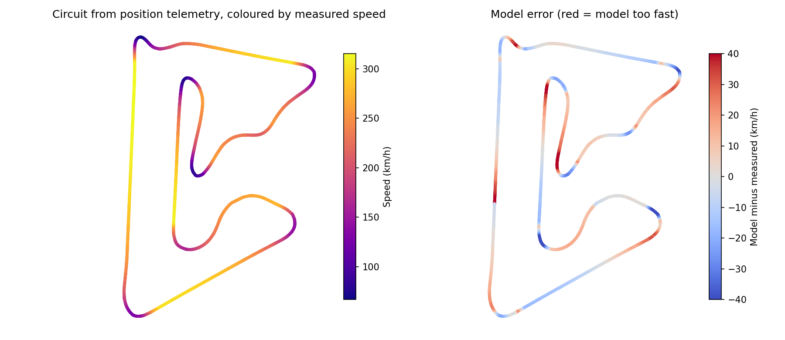
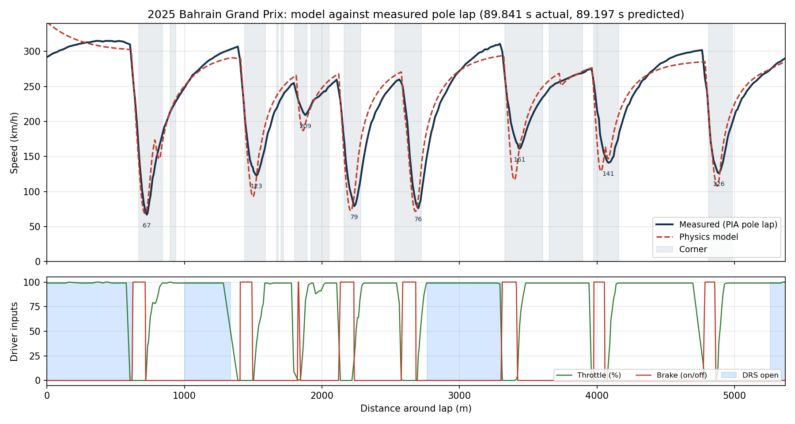
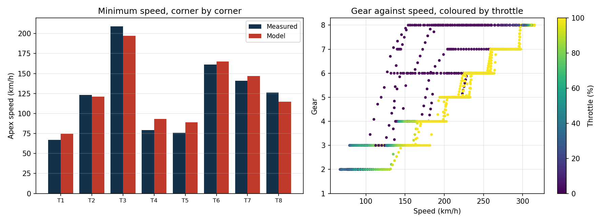
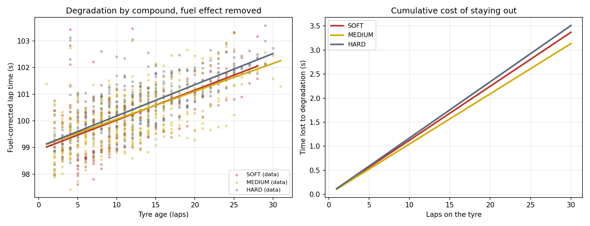
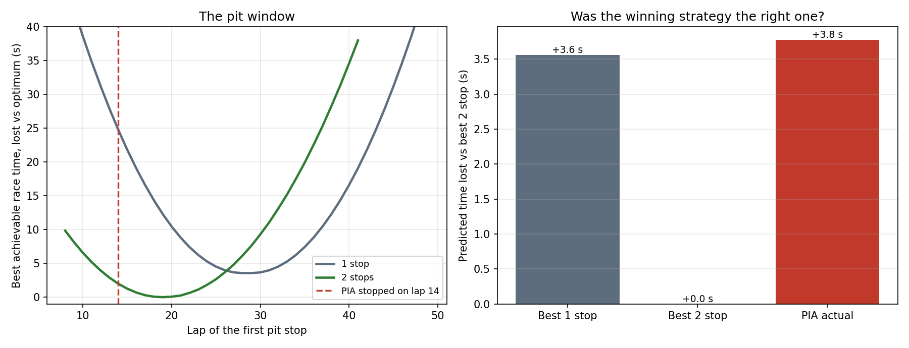

Predicting a Formula 1 Lap, and Checking It Against the Real One
A physics lap time model and a tyre degradation model, both built from scratch and both scored against real telemetry from the 2025 Bahrain Grand Prix. The model predicts the pole lap to within 0.7%, and says the winning strategy was 3.8 seconds off optimal.
Drive the model yourself
The solver below is the same model, ported to JavaScript and running in your browser on circuit geometry taken from real position telemetry. Move a slider and the lap is re-solved immediately. The blue line is what the real car did; the red line is your car.
Things worth trying: cut downforce and watch the straights get quicker while every corner gets slower; add grip and see which corners respond most; drop the mass and see how little it gives you compared with aerodynamics.
Why bother comparing against real data
Anyone can write a lap time simulation. The difficulty is knowing whether it is right, and a model that has never been checked against measurement is really just an opinion expressed in Python. Formula 1 publishes enough telemetry to remove that excuse: speed, throttle, brake, gear, DRS and car position, sampled around every lap of every session.
So this project does two things. It predicts a qualifying lap from physics and compares it corner by corner with what the car actually did, and it fits a tyre degradation model to a full race and asks whether the strategy that won was the quickest one available.
Part one: the lap
Building the circuit from the car
The model needs circuit geometry, specifically the corner radius at every point. Rather than looking up a track map, I derived it from the car's own X and Y position telemetry. Curvature is computed analytically from the path:
kappa = |x' y'' - y' x''| / (x'^2 + y'^2)^(3/2) R = 1 / kappaThat needs second derivatives of noisy measured data, which is a good way to produce garbage. Savitzky-Golay filtering avoids it by fitting a low-order polynomial over a moving window and differentiating that instead of differencing raw samples.

Solving the lap
The solver is quasi-steady and makes three passes: a cornering limit that accounts for downforce growing with speed, then a forward pass limited by power and traction, then a backward pass limited by braking, with longitudinal and lateral tyre demand sharing capacity through a friction ellipse. DRS is taken from the real telemetry and applied as a reduction in drag where the driver had it open.
Mass, power and braking limits are public. Grip, downforce and drag are not, so those three are fitted to the measured speed trace. Everything else follows from physics.

Where it is wrong, and why
The overall lap time lands within 0.65 seconds, but the interesting part is the residual. Speed trace RMSE is about 18 km/h, and the corner-by-corner errors run to roughly 14 km/h either way.
The pattern is systematic rather than random, and it points at what a quasi-steady model leaves out. It carries too much speed through the slowest corners, because it assumes grip is available the instant it is asked for, whereas a real car has to transfer load, settle, and deal with a driver easing the car to the apex. It is slightly slow through some of the faster sections, where the real car benefits from aerodynamic behaviour a simple point mass with a single downforce coefficient cannot represent. Nothing here models tyre temperature, suspension, or the fact that a driver is managing a lap rather than solving an optimisation problem.

Part two: the race
Cleaning the data first
The race contains 1,128 laps, and most of them are useless as a measurement of tyre behaviour. Safety car and yellow flag laps are not racing laps. In-laps and out-laps contain pit lane time. Laps spent stuck behind another car measure traffic, not degradation. Filtering to green-flag racing laps, excluding pit-affected laps, and dropping anything more than 7% off each driver's own best leaves 979 usable laps.
The confounding problem
A lap time does not measure tyre condition cleanly, because two effects move it in opposite directions at once. The tyres wear, which costs time. The car burns roughly 1.7 kg of fuel a lap and gets lighter, which gains time. Fit degradation without accounting for fuel and you will underestimate it, because fuel burn has been quietly cancelling part of it.
So both are fitted simultaneously in a single regression rather than sequentially:
laptime = driver_baseline + compound_offset + degradation(compound) * tyre_age
+ fuel_effect * lap_numberThe driver baseline term matters more than it looks. Without it the regression compares a front-running car on hards against a midfield car on softs and attributes the difference to the tyre. Giving every driver their own intercept cut the model's error from 0.821 s to 0.576 s, which is the single biggest improvement I made to it.
The fitted fuel effect came out at 0.064 s per lap, worth about 3.6 seconds across the race, which is in the right region for a car shedding around 100 kg.

A limitation I am not going to hide
The model separates base pace correctly: the soft is the quickest compound and the harder tyres are slower, which is what should happen. It does not cleanly separate degradation rates between compounds. All three come out near 0.1 seconds per lap, and the hard even appears to degrade slightly fastest, which is not believable.
The likely reason is that compound choice is not randomly assigned. Compounds get used in particular phases of a race, in particular track and traffic conditions, by particular cars, and a linear model fitted to one Grand Prix cannot untangle that from the tyre itself. Fixing it properly would need several races pooled together, and a stint-level model rather than a lap-level one. Reporting the degradation numbers as if they were reliable would be the dishonest option.
Was the winning strategy the right one?
Pit loss was measured from the race itself rather than assumed, by comparing in-laps and out-laps against normal racing laps: 26.1 seconds. With that, the model enumerates every legal strategy, including the rule that a dry race requires two different compounds, and ranks all 14,532 of them.

The model says a two-stop was correct, that the ideal shape was three roughly equal stints of about 19 laps, and that the best available one-stop would have cost around 3.6 seconds. Piastri, who won, stopped on lap 14 and ran 14, 18 and 25. The model scores that at 3.8 seconds off its own optimum, over a race lasting more than 94 minutes: an error of roughly 0.07%.
The right conclusion is not that a professional strategy team got it wrong by 3.8 seconds. It is that a model built from public data lands within a few seconds of what a team with vastly more information chose to do, and that the flat basin in the left-hand plot explains why: anywhere from about lap 16 to lap 22 costs almost nothing, so the exact stop lap was never the decision that mattered. Track position and traffic, which this model does not represent at all, matter far more than the last second of theoretical pace.
Run your own strategy
The same calculation, live. Set the tyre behaviour and the pit loss, and it evaluates every legal one and two stop strategy, picks the quickest, and draws the pit window. The values it starts with are the ones fitted to the 2025 Bahrain race data.
Worth trying: raise the pit loss above about 30 seconds and watch the one stop become correct; make the hard tyre durable and see the strategy change shape entirely.
What this demonstrates
- Building a physical model and then holding it to account against measured data, including reporting where it fails.
- Working with real, messy telemetry: filtering, resampling, differentiating noisy signals, and knowing which laps are not measurements at all.
- Recognising confounded effects and handling them properly, rather than fitting the first regression that runs.
- Turning a fitted model into a decision, and being clear about the limits of that decision.
Two scripts: the lap model and the stint and strategy model. Requires FastF1, NumPy, pandas, SciPy and Matplotlib. Running them downloads the session data and reproduces every figure on this page.